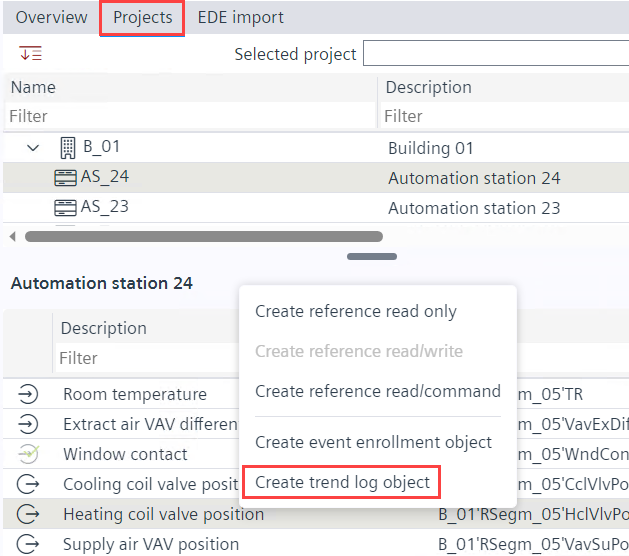

创建趋势日志对象 - 项目选项卡
在中创建趋势日志对象Projects选项卡。
- Go to Engineering > BACnet references.
- Click Projects tab.
Create a BACnet reference from ABT Site projects. - Select the required project in the Selected project field.
- The respective data points of the project is displayed below in the form of a table.
- Right-click the required data point in the table and click Add trendlog.

- The trend log object is created in the Plants navigation view.
设备名称、设备实例号、对象类型和对象实例号信息可以在Log device object properties财产在Properties选项卡。